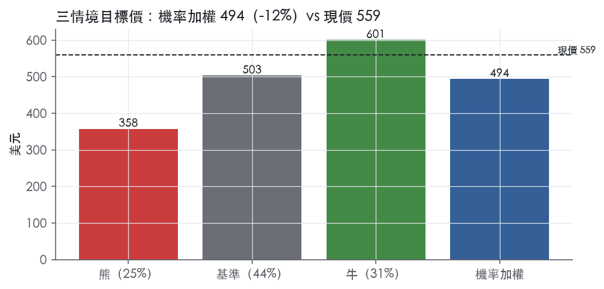
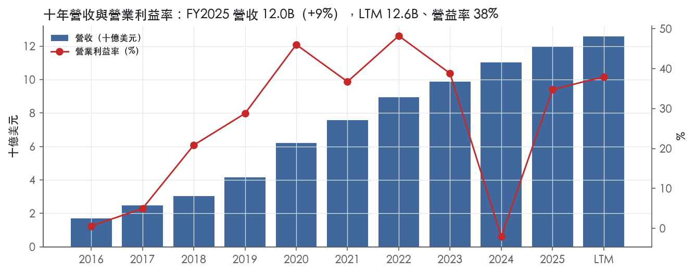
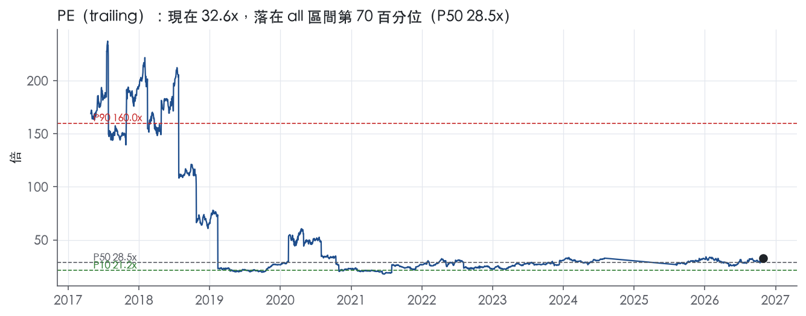
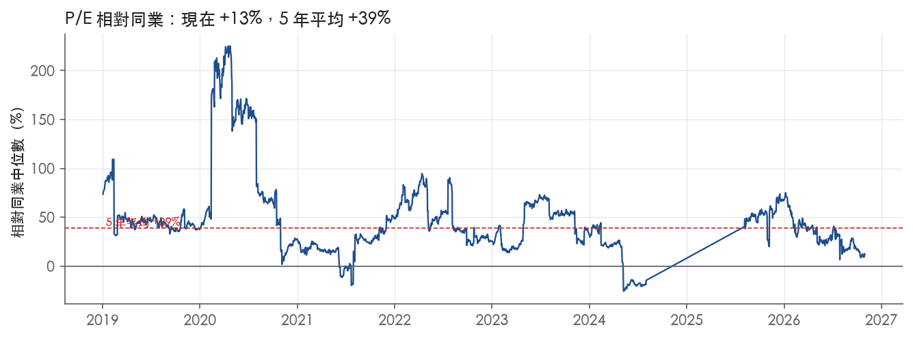
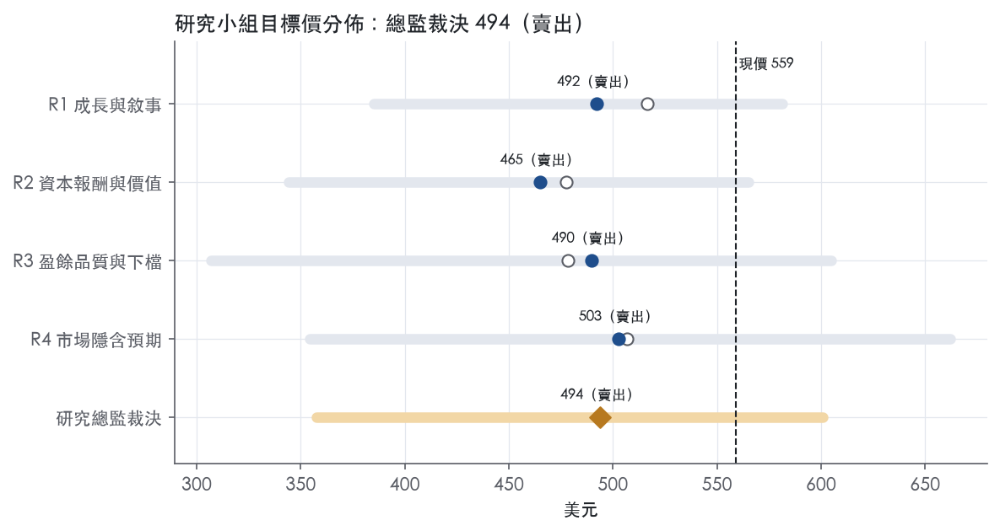
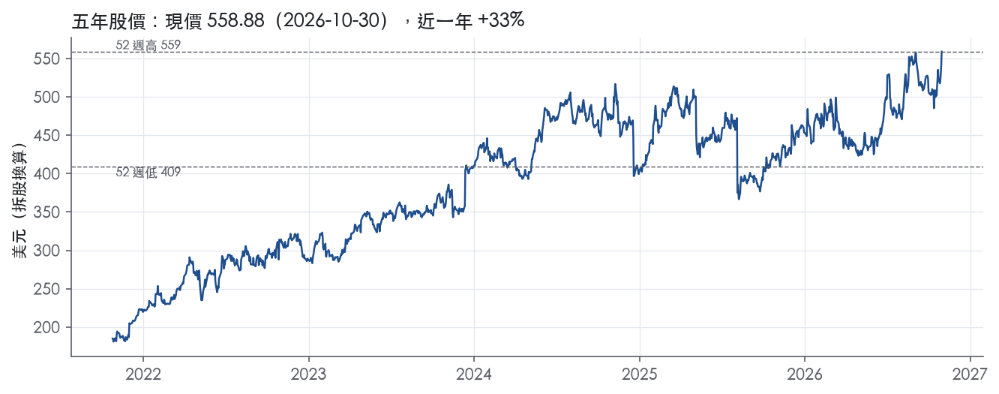

評等總表 › 醫療保健 › VRTX
多支柱屬實，但倍數該回落：看空｜評等 賣出｜目標價 494
| 報告日 | 評等 | 目標價 | 當時股價 | 超額報酬 |
|---|---|---|---|---|
| 2026-10-30 | 賣出 | 494 | 559 | -21.6% |
| 評等 | 賣出 |
| 12 個月目標價 | 494 美元 |
| 現價 | 558.88 美元（2026-10-30） |
| 預期報酬 | 股價 -11.6%＋股息 0.0%＝總報酬 -11.6%；同業籃門檻 10.0%，超額 -21.6% |
| 估值方法 | P/E 28.0x，套在第 5–8 季的EPS（也就是一年後的未來四季） |
| 三情境 | 熊 358／基準 503／牛 601 |
| 研究流程 | 四位研究員兩輪辯論＋研究總監裁決 |
| 資料來源 | SEC EDGAR XBRL、Tiingo、FRED（全免費） |
多支柱屬實，但倍數該回落：看空（研究總監裁決，四位研究員兩輪辯論後）
評等 賣出｜12 個月目標價 494 美元（總監三情境機率加權 497 與研究員中位數 491 各半）｜現價 558.88（2026-10-30）
預期報酬：股價 -11.6%＋股息 0.0%＝總報酬 -11.6%。同業籃門檻 10.0%，超額 -21.6%。
估值方法：P/E 28.0x，套在第 5–8 季的EPS（也就是一年後的未來四季）。三情境：熊 358（25%）／基準 503（44%）／牛 601（31%）。
什麼會讓研究總監改變看法：Crinetics 交割後 FY2026 GAAP 合併費用指引上緣上修不到 200M（假設門檻）且 pove 前兩季營收陡於 JOURNAVX 曲線，y1 營益率回 37.5%、倍數上調至 30x（q5_q8 口徑持平水位）並轉中性；pove 收 CRL 或 GUARD 定案納入 CF 藥品，熊機率上調、倍數下調至 25x。
| 過去四季（實際，FY2026Q2） | 未來四季 | 第 5–8 季 | 第 9–12 季 | |
|---|---|---|---|---|
| 營收（B） | 12.6B | 13.8B | 15.0B | 16.1B |
| 營收成長 | 10.2% | 9.5% | 8.5% | 7.5% |
| 營業利益率 | 38.0% | 36.5% | 37.5% | 38.0% |
| EPS（美元） | 17.15 | 15.88 | 17.96 | 19.83 |
| EPS 成長 | 22.2% | -7.4% | 13.1% | 10.4% |
| 每股股息（美元） | — | 0.00 | 0.00 | 0.00 |
| P/E（現價） | 32.6x | 35.2x | 31.1x | 28.2x |
| 股息殖利率（現價） | — | — | — | — |
過去四季為申報數字；預測為研究總監的假設、程式計算。倍數與殖利率都用現價計算，用來看現價對應各期獲利的高低。
| 情境 | 機率（歷史） | 故事 | 未來四季營收成長 | 第 5–8 季營益率 | 倍數 | 目標價 | 股價漲跌 |
|---|---|---|---|---|---|---|---|
| 熊 | 25%（26%） | pove CRL或延後（風險表第 2 條）、PDAB 上限價與 GUARD 回扣壓 CF 淨價（第 1 條）、Crinetics 費用重於預期（第 5 條），去溢價至前瞻帶 P50 附近 | 8.0% | 34.0% | 23.0x | 358 | -36.0% |
| 基準 | 44%（41%） | pove如期核准、上市斜率近JOURNAVX；Crinetics與上市費用壓NTM營益率、稅率20%；FY2027指引揭露個位數成長，倍數由30.3x收斂到前瞻帶P50–P75之間 | 9.5% | 37.5% | 28.0x | 503 | -10.0% |
| 牛 | 31%（34%） | pove寬標籤核准且上市斜率陡於JOURNAVX，非CF續放量，Crinetics稀釋輕，FY2027指引年增雙位數，市場對Q5–Q8盈餘續付今天的30.3x並略升評至31x | 11.0% | 39.0% | 31.0x | 601 | 7.5% |
目標價由程式依研究總監的驅動與倍數計算；機率由研究總監給定。括號內是歷史頻率：把這檔股票過去十年 12 個月報酬的波動形狀，置中在基準情境，結果落在各情境附近的比例。

四位研究員用不同方法各自估值，回應研究總監的質疑後交出第二輪，最後由總監逐點裁決。各研究員的主張見第七章，裁決理由見第八章，完整論證見《研究底稿》。
| 立場（一輪→二輪） | 加權目標價（一輪→二輪） | 評等（一輪→二輪） | 第二輪倍數 | 熊～牛目標價 | |
|---|---|---|---|---|---|
| R1 成長與敘事 | 中性→看空 | 516→492 | 賣出→賣出 | 31.0x | 385～581 |
| R2 資本報酬與價值 | 看空→看空 | 477→465 | 賣出→賣出 | 29.0x | 344～565 |
| R3 盈餘品質與下檔 | 看空→看空 | 478→490 | 賣出→賣出 | 28.0x | 307～605 |
| R4 市場隱含預期 | 看空→看空 | 507→503 | 賣出→賣出 | 28.0x | 354～662 |
| 研究總監裁決 | 看空 | 494 | 賣出 | 28.0x | 358～601 |
目標價由程式依各自的驅動與倍數計算；評等＝機率加權總報酬 − 同業籃門檻。
Vertex 是一家全球生技公司，聚焦特殊疾病市場，核心能力是把人類疾病的因果生物學轉譯成可核准的藥物¹。公司目前已上市產品覆蓋囊性纖維化（CF）、鎌狀細胞病（SCD）、輸血依賴型重型海洋性貧血（TDT）與急性疼痛四個疾病領域¹。中後期臨床管線延伸至 IgA 腎病變、APOL1 相關腎病、神經性疼痛、第一型糖尿病、原發性膜性腎病與原發性多囊腎等適應症¹。客戶面上，公司主要透過少數特殊藥局與特殊經銷商，以及美國少數大型批發商銷售藥品，終端由病患、醫療機構與授權治療中心（ATC）使用¹。Vertex 本質上是一家「單一病理機轉找藥、再用併購/授權擴充管線」的平台型生技公司，CF 仍是現金引擎，SCD/TDT、急性疼痛與即將加入的腎臟病變是成長引擎。
Vertex 財報不按產品分部揭露營收比重，10-K 未揭露各產品營收占比。CF 組合是公司基本盤，五款上市藥物（KALYDECO、ORKAMBI、SYMDEKO/SYMKEVI、TRIKAFTA/KAFTRIO、ALYFTREK）合計可讓美國、歐洲、澳洲、加拿大約 97,000 名 CF 病人中近四分之三使用，公司估計全目標市場 CF 病人約 112,000 人，CF 藥物在逾 60 個國家取得給付或可及性¹。最新一代口服藥 ALYFTREK 採一日一次給藥，在肺功能指標 ppFEV1 上不劣於 TRIKAFTA，且汗液氯化物改善更佳，公司預期多數病人將逐步轉換至 ALYFTREK¹。
CASGEVY 是公司與 CRISPR Therapeutics 合作開發的基因編輯一次性療法，用於治療重型 SCD 與 TDT，在美國及歐洲、加拿大、中東等多地已核准，公司估計這些地區約 60,000 名重型 SCD 或 TDT 病人具潛在適用資格¹。CASGEVY 利潤依 A&R JDCA 協議與 CRISPR 按 60%／40% 分配，其餘候選藥物則平分利潤與虧損¹。JOURNAVX（suzetrigine）為 2025 年 1 月美國 FDA 核准的首創口服 NaV1.8 選擇性抑制劑，用於成人中重度急性疼痛，是公司急性疼痛新支柱¹。CASGEVY 與 JOURNAVX 合計代表非 CF 營收，公司 2026 全年指引將非 CF 產品營收訂為 5.00 億美元（500 million）或以上²。公司正以收購 Crinetics Pharmaceuticals（交易預計 2026 年第三季完成）新增罕見內分泌疾病作為「第五支柱」²，若 povetacicept 在 IgAN 核准，將開啟公司的腎臟病變支柱²。從規模看，CF 仍是營收主力、非 CF 業務正快速擴大但基數仍小（JOURNAVX 單季 50M、CASGEVY 單季 76M）【判，數字取自 8-K 2026-08-03】。
公司在美國主要透過特殊藥局、特殊經銷商與大型批發商銷售，海外則主要透過經銷商安排及零售藥局、醫院與診所銷售，許多海外客戶為政府擁有或支持的機構¹。部分市場 CASGEVY 可能不經特殊經銷商／藥局，直接銷售給授權治療中心¹。地區上，FY2026Q2 美國營收 2.06B 美元、年增 11%，美國以外營收 1.28B 美元、年增 14%，海外成長快於美國主要受 CF 多地區表現、CASGEVY 輸注增加及匯率有利影響²。FY2026Q1 美國營收 1.78B 美元、年增 7%，美國以外營收 1.21B 美元、年增 9%³。JOURNAVX 給付覆蓋持續擴大：公司揭露截至 2026 年 1 月，逾 2 億名商業及政府保險人有 JOURNAVX 給付覆蓋（約佔美國覆蓋人數三分之二），21 個州透過 Medicaid 提供給付¹；到 FY2026Q2 財報揭露，JOURNAVX 已與三家主要藥局福利管理機構（PBM）中的兩家另外達成 Medicare Part D 協議，總計美國約 2.60 億人可獲得商業與政府保險給付，23 個州提供 Medicaid 給付²。CASGEVY 方面，公司與覆蓋逾 2.75 億人的全國及區域付款方簽訂協議以提供可及性，產品已在美國以外的奧地利、丹麥、英國、義大利、盧森堡、巴林、沙烏地阿拉伯、阿聯及科威特取得患者可及性¹；FY2026Q2 時 CASGEVY 已在 39 個國家核准²。地區分布顯示公司海外擴張動能強勁，CF 給付談判（如加拿大、西班牙等）持續推進。
FY2025Q3（截至 2025-09-30）營收 3.08B 美元，年增 11.0%（is/dv 資料包，期別 FY2025Q3），毛利率 86.5%、營益率 38.6%。FY2025Q4（截至 2025-12-31，由年度倒推）營收 3.19B 美元，年增 9.5%，營益率 37.8%。FY2026Q1（截至 2026-03-31）總營收增至 2.99B 美元，較 2025 年第一季增長 8%，美國營收 1.78B 美元（增 7%）、美國以外 1.21B 美元（增 9%），GAAP 淨利 1.0B 美元（去年同期 646M 美元，當期有 379.0M 美元無形資產減損）³；公司當時重申 FY2026 全年營收指引 12.95B–13.1B 美元³。FY2026Q2（截至 2026-06-30）總營收達 3.33 billion 美元，較去年同期增長 12%，美國營收 2.06B 美元（增 11%）、美國以外 1.28B 美元（增 14%），GAAP 與 non-GAAP 淨利各為 1.1B 美元、1.2B 美元²；公司將 FY2026 全年營收指引上調至 13.1B–13.2B 美元（原 12.95B–13.1B 美元），非 CF 產品營收指引維持 500 million 美元以上不變，合併 GAAP R&D/AIPR&D/SG&A 費用指引維持 6.3B–6.45B 美元、non-GAAP 維持 5.65B–5.75B 美元²。資料包 LTM（LTM@FY2026Q2）顯示營收 12.59B 美元、EBITDA 5.00B 美元、FCF 3.80B 美元。整體趨勢是營收逐季加速（年增率由個位數升向雙位數中段），利潤率因 JOURNAVX 商業化投入及腎臟病變團隊建置略受壓，但現金創造能力穩健。
公司稱其核心戰略是「結合對人類疾病的突破性理解與治療科學，徹底推進人類健康」，聚焦因果生物學驗證的靶點、可預測的生物標記，以及快速上市路徑¹。公司明確表示要「連續創新」（serial innovation），用首創（first-in-class）藥物接續潛在同類最佳（best-in-class）候選藥物，並持續透過內部研發與外部併購/授權取得新技術¹。CEO 在 FY2026Q2 法說中表示，公司在 CF 持續擴大領導地位，SCD、β 海洋性貧血與急性疼痛帶動強勁營收成長，並透過收購 Crinetics 新增罕見內分泌疾病作為「第五支柱」，以進一步分散產品組合²。公司在 FY2026Q1 法說中強調 CASGEVY 與 JOURNAVX 合計貢獻當季逾 25% 的成長，顯示收入基礎日益多元化，並正在建立「第四支柱」腎臟病學業務³。公司也點名 povetacicept 具「pipeline-in-a-product」潛力，同時針對 IgAN、pMN 與 gMG 推進，若 IgAN 適應症在 2026 年 11 月 30 日 PDUFA 日期前獲批，將成為腎臟病學支柱的首個商業化產品²。
就我們的判斷，Vertex 的敘事正從「CF 壟斷者」轉型為「多支柱特殊疾病平台」，CASGEVY 與 JOURNAVX 的高速成長（兩者合計仍是小基數）正逐步稀釋對 CF 的依賴，但 CF 仍貢獻絕大多數營收與現金流，短期內任何 CF 競爭或定價壓力仍是主要風險。povetacicept 在 IgAN 的 PDUFA 日期（2026/11/30）是未來三個月最關鍵的單一事件，核准與否將直接決定公司第四支柱腎臟病學業務能否如期落地。Crinetics 收購完成後的指引更新，將是觀察公司資本配置是否從股票回購轉向外部成長引擎的下一個訊號。

Vertex 的護城河評為寬。理由有兩個：CF 三合一療法的專利保護延伸到 2037–2039 年；CF 病人池小而集中，且大部分已由 Vertex 服務。因此我們有把握 ROIC 在未來 10 年以上高於資本成本。趨勢判為穩定而非變寬，因為新支柱的護城河還沒有在數字上得到證明，而併購擴張正在壓低資本報酬水準。
護城河的主體是無形資產，也就是專利與法定獨佔；其次是 CF 市場的效率規模。
無形資產（專利、法定獨佔）
效率規模
數字看得到，但 ROIC 的波動遠大於寬護城河應有的樣子，必須拆開來看。
支持寬評級的數字
衝突一：ROIC 標準差 89.7%，最低值 -183.2%
衝突二：FY2024 的 ROIC 為 -1.8%、營益率為 -2.1%
衝突三：最新 ROIC 31.8%，遠低於高峰 118.4%
結論：「ROIC 高於資本成本」這個條件，數字是支持的；但「利潤率穩定」只在毛利率層級成立。因此我們維持寬評級，但趨勢只給穩定。
最大的侵蝕風險是集中度：護城河幾乎全部建立在 CF 一個疾病上。
目標倍數應相對同業給予溢價。理由是 CF 專利保護延伸到 2037–2039 年、毛利率標準差僅 0.9%，可見期內超額報酬的確定性高於多數大型生技同業。不過現行 P/E 32.6x 已高於自身 10 年中位數 28.5x，EV/Sales 位於 5 年 85.4% 分位（倍數帶表）；溢價應以同業為錨，不應再假設自身倍數會繼續擴張。
| 指標 | 最新 | 十年平均 | 標準差 | 最低 | 最高 |
|---|---|---|---|---|---|
| ROIC | 31.8% | 45.9% | 89.7% | -183.2% | 118.4% |
| 毛利率 | 86.2% | 87.4% | 0.9% | 86.1% | 88.9% |
| 營業利益率 | 34.8% | 25.8% | 17.8% | -2.1% | 48.2% |
| FCF 利潤率 | 26.6% | 29.2% | 15.6% | -7.2% | 48.2% |
| ROE | 22.5% | 26.2% | 17.0% | -3.2% | 64.9% |
程式計算。資本成本代理值（10 年債＋5%）：10.0%；ROIC 平均減資本成本：35.9%；ROIC 有資料的 9 年中，高於資本成本 7 年。
LTM營業現金流／淨利為0.97x，近三年平均0.94x，十年平均0.94x，三個口徑都落在黃燈區（<1.00x）。LTM自由現金流／淨利0.86x，近三年平均反而較高1.07x，十年平均0.96x，顯示短期資本支出或營運資金用掉了一部分現金轉換。應計比率LTM為0.4%、近三年0.5%，均為正值但遠低於5%紅線，十年平均反而是-2.0%，顯示長期盈餘品質優於近期。整體看，現金沒有系統性跟不上盈餘，但近兩年轉換效率確實比歷史略差，與FY2024的AIPR&D一次性費用、FY2025營運資金擴張有關，詳見下節。
FY2024淨利率重摔是因為收購Alpine Immune Sciences的已取得研發中（AIPR&D）費用44億美元，認列為資產收購費用，拖累當年營益率至-2.1%⁴。FY2025此項僅133.0M美元，主要是授權與合作的一次性里程金，屬正常業務支出而非異常⁴。FY2026Q2新聞稿顯示GAAP與非GAAP研發、AIPR&D與SG&A合計費用分別為1.6B美元與1.4B美元，差距主要來自股權酬勞²。FY2026全年展望中，GAAP與非GAAP研發、AIPR&D及SG&A費用的差異「主要與6.5億至7億美元的股權酬勞費用有關」²。GAAP與非GAAP有效稅率FY2026Q2分別為21.0%與21.1%，差距很小，顯示稅率調整不是主要非GAAP操作項²。我認為SBC是真實經濟成本（稀釋股東權益），不應在估值時直接加回非GAAP淨利，而AIPR&D的一次性收購費用（如FY2024的44億美元）可視為非經常性，可在評估「核心」盈餘趨勢時剔除。
公司淨負債為負7.85B美元，淨負債／EBITDA為-1.57x（LTM），槓桿燈號為綠燈，近三年平均77.9x、十年平均19.1x的失真數字來自EBITDA接近零或虧損年度（如FY2024）造成的除數效應，非真實槓桿風險。利息保障倍數欄位LTM顯示「—」，但近三年平均131.0x、十年平均69.0x，均遠高於8x綠燈門檻，顯示付息能力完全無虞。2025年5月董事會核准40億美元庫藏股回購計畫，截至2025年12月31日已回購618.5M美元⁴。公司現金、約當現金及有價證券總額由2024年底的11.2B美元增至2025年底的12.3B美元，2026年第二季底再增至13.6B美元，主因營業活動現金流入部分被庫藏股回購抵銷²。公司明確表示「從未支付過普通股現金股利，且預期可見未來也不會支付」⁴，股東回饋全部靠回購。（股利＋回購）／淨利LTM為45.5%，近三年平均卻是-52.3%，反映FY2025新回購計畫才剛啟動，歷史平均被早年低回購年度拉低，非槓桿式回饋股東的訊號。
應收帳款成長比營收快19個百分點（FY2025）：10-K原文顯示FY2025營收從11.0B增至12.0B美元，主因CF藥物TRIKAFTA/KAFTRIO需求強勁及ALYFTREK、JOURNAVX、CASGEVY新品貢獻放量⁴，公司未在MD&A中單獨揭露應收帳款餘額變動原因；考量JOURNAVX、CASGEVY剛進入商業化放量期，新產品鋪貨期應收帳款天數通常會暫時性拉長，我判斷這是放量期的正常現象而非收入認列品質問題，但無法排除部分為一次性鋪貨墊款，建議估值研究員對FY2025營收成長打七折左右看待其現金含金量。
存貨成長比營收快31個百分點（FY2025）：公司正在擴建Leiden II廠房（約348,000平方英尺），預計2026年底投入營運，且持續投資製造網絡擴充與產能建設⁵⁴，CASGEVY等細胞基因治療的製造複雜度高、前置生產週期長，存貨墊高與新產品（CASGEVY、JOURNAVX、ALYFTREK）同步擴產高度相關，判斷為業務擴張帶來的庫存建置而非去化風險，但仍會壓縮短期FCF，與前述FCF/淨利LTM僅0.86x互相印證。
FY2016→FY2017、FY2017→FY2018淨利率跳動（+17pp、+58pp）：屬早期商業化階段，CF藥物組合持續放量帶動營業槓桿快速釋放，10-K未見異常一次性項目揭露於本次節錄中，判斷為正常規模效應，非盈餘品質問題，對當前估值無意義（年代久遠）。
FY2018→FY2019（-41pp）、FY2019→FY2020（+15pp）、FY2020→FY2021（-13pp）：此區間波動與早期授權收入認列、研發支出週期及稀釋股數變動有關，本次拿到的10-K節錄聚焦於FY2025 vs FY2024比較，未覆蓋此段細節，無法逐一取得原文佐證，列為無法完全解釋的歷史噪音，但因時間久遠對當前估值不具參考意義。
FY2023→FY2024（-42pp）：直接對應AIPR&D費用44億美元（Alpine收購，列為資產收購費用）導致FY2024營益率由38.8%驟降至-2.1%、淨利轉虧⁴，屬明確的一次性非現金經常性費用，可完全解釋，不代表核心業務惡化。
FY2024→FY2025（+38pp）：為上述FY2024 AIPR&D大型一次性費用的基期效應回轉，FY2025 AIPR&D僅133.0M美元，加上總營收持續成長至12.0B美元，使淨利率回升至34.8%附近，屬於基期正常化，非盈餘灌水⁴。
SBC／營收黃燈（LTM 5.5%、近三年6.0%、十年平均8.1%）：FY2026展望中GAAP與非GAAP費用差異主要為6.5億至7億美元的股權酬勞費用，佔公司研發、AIPR&D及SG&A展望區間的相當比重²，顯示SBC是持續且重大的非現金費用，本系統不加回處理，應視為真實稀釋成本，與稀釋股數年變動-0.4%的綠燈一併看，說明公司靠回購抵銷了SBC稀釋，但抵銷是用現金買回、不是免費的。
估值應以GAAP盈餘為基礎並對SBC不加回，因SBC是真實的股東稀釋成本，FY2026展望中SBC規模達6.5–7B美元區間（原文誤植修正：應為650–700M美元級別，詳見8-K揭露金額）需全額視為費用。FY2025應收帳款與存貨成長顯著超越營收成長，雖主因新產品放量與產能建設可解釋，但仍建議對FY2025的營收/盈餘品質打折反映現金轉換落後，FCF／淨利LTM僅0.86x支持此判斷。槓桿極低（淨負債/EBITDA為負）且利息保障倍數極高，不構成限制估值倍數的因素，公司有充裕財務彈性支持回購與併購（如Crinetics收購）。
| 項目 | LTM | 近三年 | 十年 | 燈號 | 規則 |
|---|---|---|---|---|---|
| 營業現金流／淨利 | 0.97x | 0.94x | 0.94x | 黃 | ≥1.00x 綠、<0.80x 紅 |
| 自由現金流／淨利 | 0.86x | 1.07x | 0.96x | 黃 | ≥0.90x 綠、<0.60x 紅 |
| 應計比率（(淨利−CFO)／平均總資產） | 0.4% | 0.5% | -2.0% | 黃 | ≤0.0% 綠、>5.0% 紅 |
| SBC／營收 | 5.5% | 6.0% | 8.1% | 黃 | ≤3.0% 綠、>8.0% 紅 |
| 淨負債／EBITDA | -1.57x | 77.9x | 19.1x | 綠 | ≤1.50x 綠、>3.00x 紅 |
| 利息保障倍數（營業利益／利息） | — | 131.0x | 69.0x | 綠 | ≥8.00x 綠、<3.00x 紅 |
| 稀釋股數年變動 | -0.4% | -0.1% | 0.6% | 綠 | ≤0.0% 綠、>3.0% 紅 |
| （股利＋回購）／淨利 | 45.5% | -52.3% | -6.2% | 黃 | ≥50.0% 綠、<0.0% 紅 |
| 應收帳款成長 − 營收成長（FY2025） | +18.6pp | — | — | 紅 | ≤5pp 綠、>15pp 紅 |
| 存貨成長 − 營收成長（FY2025） | +31.0pp | — | — | 紅 | ≤5pp 綠、>15pp 紅 |
程式計算；燈號以 LTM（無則近三年平均）判定。
| 風險 | 觸發指標（看什麼數字、在哪裡看） | 對 EPS 的影響方向與粗略幅度 | 未來 12 個月發生機率（高／中／低） | 出處 |
|---|---|---|---|---|
| CF 組合定價／給付壓力擴大，侵蝕核心現金流 | 美國各州 PDAB 上限價公告（科羅拉多、馬里蘭、華盛頓、明尼蘇達）；CMS GUARD model 立法進度；IRA Part D 重新設計相關揭露 | 負向、大（CF 仍為營收主體，未揭露確切佔比） | 中 | 10-K 年報 FY2025 Item 1A（風險因素） |
| povetacicept（IgAN）PDUFA 2026/11/30 核准與否 | FDA 核准函或 CRL 公告日；若核准，後續 IgAN 處方量／營收揭露 | 正向（核准）或負向（延遲/CRL），幅度中－大，第四支柱腎臟病學業務起點 | 高（事件確定發生，結果不確定） | 8-K 財報新聞稿（2026-08-03） |
| CASGEVY/JOURNAVX 競爭產品與技術進展加速，壓縮高成長業務的滲透與訂價 | 競品 FDA/EMA 核准公告；CASGEVY/JOURNAVX 季營收年增率是否低於前季（FY2026Q2 JOURNAVX 年增逾 4 倍、CASGEVY 年增 151%）² | 負向、中（基數仍小，短期對合併 EPS 影響有限，但影響未來成長敘事） | 中 | 10-K 年報 FY2025 Item 1A（風險因素） |
| 製造／供應鏈中斷（CASGEVY 細胞治療多步驟流程、第三方 CMO 含中國產能） | 公告性延遲（ATC 輸注數、cell collection 數字季度揭露）；FDA/EMA 工廠查核結果公告 | 負向、中（CASGEVY 單季僅 76M，影響絕對金額小，但象徵意義大） | 低－中 | 10-K 年報 FY2025 Item 1A（風險因素） |
| Crinetics 收購未如期於 2026Q3完成或整合成本超預期 | 交易完成公告日；完成後更新財測與 GAAP/non-GAAP費用指引差異 | 負向、中（公司尚未揭露交易對價與EPS影響，指引未反映此交易） | 中 | 8-K 財報新聞稿（2026-08-03） |
CF 定價與給付壓力是五條中機率與影響乘積最高的一條，因為 CF 產品是公司營收與利潤的主體，任何結構性降價都沒有其他業務能快速填補。10-K 明確點名美國多州已立法設立 Prescription Drug Affordability Board，科羅拉多、馬里蘭、華盛頓、明尼蘇達已有或已定義取得設定處方藥上限支付金額（upper payment limits）的路徑⁶。CMS 提出的 GUARD model 為強制性模式，若某藥價格超過經濟可比較國家的價格，將對 Medicare Part D 相關藥品課以回扣（rebate）⁶。公司雖稱 CF 藥物及 CASGEVY 目前排除於 IRA 協商計畫外，但 IRA 其他要素（Part D 重新設計、製造商折扣計畫）要求廠商承擔更多過去由聯邦政府補貼的受益人成本，可能對業務產生重大影響⁶。監測方式：追蹤上述四州 PDAB 立法進度、GUARD 執行令與規則制定狀態。
povetacicept（IgAN）PDUFA 日期是已知、確定的單一事件節點，2026年11月30日²。公司已將第一模組 BLA 於 2025 年底提交，並使用優先審查券（priority review voucher）將審查時間從十個月壓縮至六個月¹。此藥是公司打造「第四支柱」腎臟病學業務的起點，核准與否直接決定該業務能否如期商業化落地。監測方式：FDA核准函/CRL公告，以及核准後首個完整季度的處方／營收揭露。
CASGEVY/JOURNAVX 競爭與技術進展排第三，因為兩者目前基數仍小（JOURNAVX 單季 50M、CASGEVY 單季 76M）²，短期內對合併 EPS 影響有限，但若競品加速進場會打擊公司「第二成長曲線」的敘事，進而壓縮倍數。10-K 指出競爭對手可能具有更雄厚的財務、技術、銷售資源，且產業內併購可能讓資源進一步集中於較少數競爭者手上⁶。公司亦自承新產品、新技術或既有產品新資訊的出現會增加對現有上市產品的競爭並帶來定價壓力⁶。監測方式：逐季比較 CASGEVY/JOURNAVX 營收年增率是否持續高於前一季（即成長是否減速）。
製造與供應鏈中斷排第四，CASGEVY 的生產流程涉及病患細胞採集、跨廠運送、CRISPR/Cas9基因編輯、凍存運回治療中心等多個步驟，每一步都須與授權治療中心、第三方製造商及運送商協調⁶。公司亦坦承第三方製造商（部分位於中國）執行製造流程的不同部分，廠房查核時程不在公司控制範圍內，可能因多種原因延遲⁶。因 CASGEVY 單季金額仍小，此風險對整體 EPS 的絕對衝擊有限，但象徵意義大（影響公司能否履行對第四、第五支柱的成長承諾）。監測方式：季度揭露的 cell collection 數、輸注數是否出現非季節性下滑，以及任何 FDA/EMA 工廠查核結果公告。
Crinetics 收購執行風險排第五。公司已宣布收購 Crinetics Pharmaceuticals，預計 2026 年第三季完成，但 2026 全年財測並未反映此交易影響，公司將於交易完成後提供更新財測²。這代表目前的 EPS 預期尚未計入整合成本、攤銷費用與任何新增負債，一旦完成後更新指引，市場需重新評估稀釋效果。監測方式：交易完成公告日，以及完成後首次更新財測中 GAAP 與 non-GAAP 費用指引的變化幅度。
一、股票回購與現金配置排擠成長投資的隱性風險：公司現金及約當現金與有價證券從 2025年底 12.3B 增至 2026年6月底 13.6B，增加主因營運現金流入，部分被股票回購抵銷²。若管理層在 Crinetics 收購完成後仍維持大規模回購節奏，而非留存現金應對腎臟病學與第五支柱的建置成本，可能壓縮未來研發/商業化投資的彈性，進而影響長期成長曲線。
二、JOURNAVX 商業化虧損持續擴大但未單獨揭露獲利能力：公司明確說明合併 GAAP/non-GAAP R&D、AIPR&D 與 SG&A 費用增加主因是支持 JOURNAVX 急性疼痛上市及腎臟病學業務（povetacicept）建置的商業投資²，但未單獨揭露 JOURNAVX 業務本身的毛利或虧損金額，投資人無法判斷這塊業務何時能轉為正貢獻，若滲透速度不如預期，商業投入可能成為長期拖累 EPS 的因子而非公司目前敘事中強調的成長引擎。
現價 558.88 對應 trailing（過去四季）P/E 32.6x、EV/EBITDA 26.8x、EV/EBITA 28.0x、EV/Sales 10.6x、FCF 殖利率 2.7%。主要估值倍數 P/E 現在 32.6x，落在all區間第 70 百分位（P10／P50／P90 = 21.2x／28.5x／160.0x）。

把程式的機械基準預測放到現價下，市場付的前瞻倍數是：P/E（未來四季） 33.0x、P/E（第 5–8 季） 30.3x。反推 DCF 顯示市價隱含未來五年營收年成長 16.4%（WACC 9.0%、終值成長 3.0%、FCF 利潤率 29.2%，SBC 不加回）。
| 倍數 | 現在 | all P10 | all P50 | all P90 | 現在分位 | 全期 P50 |
|---|---|---|---|---|---|---|
| P/E | 32.6x | 21.2x | 28.5x | 160.0x | 69.8% | 28.5x |
| EV/EBITDA | 27.0x | 16.1x | 24.0x | 65.3x | 63.7% | 24.0x |
| EV/EBITA | 28.2x | 25.0x | 67.1x | 943.2x | 28.4% | 67.1x |
| EV/EBIT | 28.2x | 16.9x | 25.9x | 318.4x | 57.9% | 25.9x |
| EV/Sales | 10.7x | 7.5x | 10.3x | 15.9x | 53.5% | 10.3x |
| P/S | 11.3x | 8.6x | 11.1x | 16.8x | 52.8% | 11.1x |
| P/FCF | 37.6x | 19.7x | 30.9x | 46.1x | 75.7% | 30.9x |
trailing 倍數（股價 ÷ 過去四季）；分位以每個交易日計算。
同業籃：REGN, AMGN, GILD, BIIB, ALNY（手動名單（playbooks/peers.yaml））。評等門檻 10.0%：同業「倍數不變下持有一年」的隱含報酬中位數（＝ FCF 殖利率 ×(1＋g)＋g，g 為 5 年營收年複合成長並夾在 −2%～8%），每家夾在 0～15%、P/E 低於 5 倍視為資料可疑而排除，中位數再限制在 10 年債到 10 年債＋5% 之間（同業原始中位數 11.2%）；排除：ALNY（隱含報酬算不出來）。
| 代號 | 市值 | 5 年營收 CAGR | 營益率 | ROIC | P/E | 5 年 P/E 中位數 | EV/EBITDA | P/FCF | 隱含報酬 |
|---|---|---|---|---|---|---|---|---|---|
| VRTX | 141.6B | 14.1% | 38.0% | 31.8% | 32.6x | — | 26.8x | 37.3x | 10.9% |
| REGN | 98.0B | 11.0% | 28.8% | 13.1% | 20.5x | 18.0x | 16.9x | 25.6x | 12.2% |
| AMGN | 251.9B | 7.6% | 30.0% | 14.4% | 28.9x | 23.9x | 20.9x | 24.8x | 12.0% |
| GILD | 211.8B | 3.6% | -7.6% | 22.9% | — | 19.8x | — | 15.4x | 10.3% |
| BIIB | 37.5B | -6.0% | 7.4% | 10.1% | 108.5x | 18.1x | 26.5x | 18.1x | 3.4% |
| ALNY | 22.1B | 49.8% | — | — | — | — | — | — | — |
| 同業中位數 | 7.6% | 18.1% | 13.8% | 28.9x | 19.0x | 20.9x | 21.4x | 10.0% |
全部 trailing，程式以各公司 SEC XBRL 與 Tiingo 行情計算；第一列為本檔。
P/E 相對同業中位數：現在 12.6%，過去 1 年平均 36.0%、3 年 29.5%、5 年 38.7%；EV/EBITDA 相對同業中位數：現在 28.3%，過去 1 年平均 43.8%、3 年 47.9%、5 年 57.1%。

事後實現前瞻倍數帶（P/E，2018-08-17..2025-08-15）：P10／P50／P90 = 16.9x／22.6x／34.3x。它是每個交易日的股價除以之後四季實際實現的指標；一年後，今天的第 5–8 季正是那時的未來四季，所以這條帶是 12 個月目標價的同口徑倍數。因為用的是事後實際而非當時預期，過去成長超乎預期的公司這條帶會偏低。
程式的機械基準（成長率從過去四季年增率三年收斂到 6%、利潤率持平）用 事後實現前瞻 P/E P50 估值得到 418（-25.2%），市場現行前瞻倍數（現價 ÷ 基準 未來四季指標）一年後持平，套在基準 第 5–8 季指標得到 609。這兩個數字只是參考點，不是本報告的目標價；研究員對這個定價的回應在第七章。
下表是每位研究員第一輪（各自獨立）與第二輪（回應研究總監的質疑後）的結果。目標價全由程式依各自的假設計算。
| 立場（一輪→二輪） | 加權目標價（一輪→二輪） | 評等（一輪→二輪） | 第二輪倍數 | 熊～牛目標價 | |
|---|---|---|---|---|---|
| R1 成長與敘事 | 中性→看空 | 516→492 | 賣出→賣出 | 31.0x | 385～581 |
| R2 資本報酬與價值 | 看空→看空 | 477→465 | 賣出→賣出 | 29.0x | 344～565 |
| R3 盈餘品質與下檔 | 看空→看空 | 478→490 | 賣出→賣出 | 28.0x | 307～605 |
| R4 市場隱含預期 | 看空→看空 | 507→503 | 賣出→賣出 | 28.0x | 354～662 |
| 研究總監裁決 | 看空 | 494 | 賣出 | 28.0x | 358～601 |
目標價由程式依各自的驅動與倍數計算；評等＝機率加權總報酬 − 同業籃門檻。
分歧度：第一輪 加權目標價 477～516（區間＝現價的 7%）· 倍數 28～33x · 立場 中性×1、看空×3；第二輪 加權目標價 465～503（區間＝現價的 7%）· 倍數 28～31x · 立場 看空×4（方向一致）。

| 研究員 | 第二輪主張 | 堅持的理由 |
|---|---|---|
| R1 成長與敘事 | 看空，31x；成長屬實，但現價沒有反映投資年。 | 投資年後費用增速低於營收，第二年營益率回到 38%。 |
| R2 資本報酬與價值 | 看空，29x；以十年中位數 28.5x 加小幅溢價。 | FCF 殖利率 2.7% 低於 10 年期公債 4.98%，持有沒有墊底。 |
| R3 盈餘品質與下檔 | 看空，28x；盈餘乾淨，看空來自 Crinetics 未知。 | 熊情境倍數 21x 不上調，只算個股去溢價。 |
| R4 市場隱含預期 | 看空，28x；市場對個位數成長付 30.3x。 | 市場高估中期營收成長，2027 年 2 月的指引會修正。 |
每位研究員的逐條回應與完整論證見《研究底稿》（VRTX_研究底稿_2026-11-01.docx）。
| 分歧點 | R1 | R2 | R3 | R4 | 什麼資料會分出勝負 |
|---|---|---|---|---|---|
| 倍數與口徑 | 31x@ntm，10 年 P50 加投資年與護城河溢價 | 29x@ntm，10 年 P50 加小幅溢價 | 28x@q5_q8，前瞻帶 P50–P75 間，Crinetics 未知壓低 | 28x@q5_q8，市場對基準路徑付 30.3x 已超 P75 | FY2027 指引（2027-02）、pove 11/30 結果、Crinetics 交割後指引 |
| NTM 營益率 | 36.5% | 37.5% | 36.5%（Crinetics 1.0＋腎臟 0.5pp） | 36.0%（Crinetics 1.5＋pove 0.5pp） | 交割後 FY2026 GAAP 合併費用指引對 6.3–6.45B 的上修幅度 |
| Q5–Q8 營益率 | 38.0%，投資年後重新加速 | 38.0% | 37.0%，J 曲線 | 37.0% | FY2027 費用指引對營收指引；FY2027Q1 營益率 |
| Q5–Q8 營收成長 | 8.5% | 8.5% | 8.4%（pove 約 1pp） | 10.0%（pove＋Crinetics） | FY2027 營收指引中點年增；pove 前兩季對照 JOURNAVX 曲線 |
| 熊情境與機率 | 26x@ntm、29%；牛 35% | 24x@ntm、28%；牛 32% | 21x、20%，離基準 −38%；牛 29% | 23x、29% 高於牛 27% | PDUFA 結果；GUARD 是否納入 CF；Q3 起非 CF 季增是否減速 |
一、倍數與口徑：own，29x eps@q5_q8。 口徑先定。劇本主尺是 q5_q8，這檔股票另有兩個不能把 trailing 倍數套在 NTM EPS 的理由。其一，NTM 是投資年（JOURNAVX 上市、腎臟團隊、Crinetics 併入），R2 的 29x@ntm 把投資年罰了兩次——一次在 EPS，一次在把 10 年中位數套到被壓低的 EPS 上；R1 用「分母暫低、市場付的 trailing 倍數會偏高」修正了這點，並自承只因缺前瞻帶才沒改 q5_q8，我手上有，就直接用。其二，Crinetics 的會計處理未揭露（R3 已要求）：Alpine 是以資產收購一次認列 44 億 AIPR&D⁴，若同樣處理，一次性費用落在 NTM，Q5–Q8 乾淨。水位：29x 在事後實現前瞻帶 P50 22.6x 與 P75 30.0x 之間、貼近 P75，低於零報酬倍數 30.3x 與市場持平 33.0x。不取 R3／R4 的 28x：兩人都把 Crinetics 未知折進倍數——R3 明說交割費用溫和就回 30x，等於承認 28x 含 Crinetics 折價；我已把它放進 y1、y2 營益率，倍數再折是重複計算。R4「市場對 7%→6% 機械路徑付 30.3x、已超 P75」是對機械 EPS 說的，他自己的 y2 是 10%；而 P50 22.6x 形成於 FY2019 36.6%、FY2020 49.1% 的放量年（／FY2020），對今天的 Vertex 系統性偏低，P75 才是近三年約一成成長時代的中樞。不取持平 33x 的理由全是個股因素：5 年 CAGR 14.1%（同業表）降到指引隱含的個位數高檔；2026 年約 150bp 匯率順風在美元 121.3 持平前提下 2027 不重複²；ROIC 由 118.4% 降至 31.8%（／FY2025）；JOURNAVX 僅一項 Orange Book 專利、CASGEVY 60／40 分潤¹使非 CF 的利潤轉換率低於 CF。R1 以「十年期間利率低於 4.98」限制溢價、R2 以 FCF 殖利率 2.7% 低於十年債 4.98% 當持有理由，皆屬利率論證，不計入。
二、NTM 營益率：quality，36.5%。 三塊：(a) 指引季節性——FY2026 營收 13.1–13.2B、GAAP 合併費用 6.3–6.45B 重申，Q2 合併 GAAP 費用已 1.6B²，對照 Q1 38.1%、Q2 37.4%（／Q2），下半年費用率高於上半年是指引自己說的；(b) Crinetics 約 1.0pp（假設），指引明寫不含、交割後才更新；(c) 腎臟上市 2027 上半年增量約 0.5pp（假設），建置費早於營收是時序問題。R2 的 37.5% 漏了 (a)——他的材料沒有八季表，分歧來自證據不同。R4 的 36.0% 多給 Crinetics 0.5pp 卻無依據，且他的營業利益歷史誤差 +1.8% 偏高。機械基準歷史低估營業利益 3.9%，壓利潤率需個股證據，(a)(b) 就是。
三、Q5–Q8 營益率：own，37.5%。 R1／R2 的 38% 假設 Crinetics 只是 NTM 的事，材料無任何依據說其研發費用在 2027 下半年消失；R3／R4 的 37% 把上市費用用 J 曲線推進 y2，但 8-K 說腎臟建置已在 2026 指引內，Q5–Q8 不會再有同等增量。所以 y2 只回升一半：Crinetics 常態研發留著（假設）、建置一次性退場、pove 開始貢獻。y3 回 LTM 38.0%，理由同 R2：槓桿被 KALYDECO 2028 到期與 CASGEVY 分潤抵銷¹。
四、Q5–Q8 營收成長：value，8.5%（y1 9.5%、y3 7.5%）。 R4 的 10% 需要 Crinetics 營收與非 CF 連續數倍放量：前者材料沒有（與 G4 同理），後者 R4 在 E2 自承無基準率。8.5% 的組成：CF 低個位數——約四分之三的 97,000 名病人已在用藥，ALYFTREK 是轉換與淨價¹；非 CF 由 CASGEVY 76M（季增 78%）、JOURNAVX 50M（季增 71%）、約 2.60 億人給付、CASGEVY 2 歲以上標籤新增約 5,500 名可適用病人²延續；pove 第一個完整年度約 1pp（R3 假設）。y1 取 9.5%：指引上修至 13.1–13.2B、Q2 年增 12.5%支持高於基準 8.8%，匯率順風不延續則壓在 R4 的 10.5% 之下；本部營收誤差中位數 −0.4%（偏低），也不該取最低值。
五、熊情境與機率：own。 熊取 R4：R3 的熊離基準 −38%，歷史頻率 17%（程式對照），是尾部不是熊情境；且 NTM 一半已被指引鎖定，y1 營收 6% 需要下半年就偏離指引，R4 的 8% 才是可信起點。牛取 R1 的驅動，倍數改市場持平 33x——牛的本質就是市場繼續付今天的倍數，R1 的 35x@ntm 換成 q5_q8 口徑約在此水位。拒絕 R4 的熊 29% 高於牛 27%：PDAB 上限價與 GUARD 回扣是風險章判「中」機率的慢變數，12 個月內打進 EPS 的機率不足以翻轉歷史上的牛熊順序；拒絕 R3 的基準 51%，那是熊放太遠造成的假集中。
漂移與總經。 漂移表無人被標記。R1 靠攏 63%，但六項修正逐條對應我的審查意見且附證據（G2 改錨、G3 砍 y3 機制、G4 刪 Crinetics 營收、G5 向歷史靠），是向審查靠不是向同儕靠，不退回；R2、R3、R4 的機率微調皆向歷史頻率靠，接受。退回的漂移：無。四人 macro_deviations 皆空，無須裁決；10 年期 4.98、美元 121.3 依本行前提，匯率順風不延續是前提的應用；醫療保健對 10 年期的敏感度 t 值 −0.7，任何人不得引用。
與機械基準不同的驅動（皆為假設，依據見裁決二至四）：rev_growth_y1 9.5%（基準 8.8%）、y2 8.5%（7.4%）、y3 7.5%（6.0%），不含 Crinetics 營收；op_margin_y1 36.5%（38.0%）、y2 37.5%（38.0%），y3 維持 38.0%；tax_rate 20.0%（17.4%）——non-GAAP 稅率指引 19.5–20.5% 在 Q2 GAAP 21.0% 之後重申，GAAP 與 non-GAAP 幾乎相同（21.0% 對 21.1%）²，取公司區間中點，基準的 17.4% 混入 FY2024 虧損年；share_change_pct 維持 −1.4%，那是 LTM 回購速率，40 億計畫已買 618.5M⁴、現金與有價證券 13.6B²，「Crinetics 排擠回購」無數字，與我給 R3 的 Q4 一致。
目標倍數 29x eps，期間 q5_q8。錨：劇本的自家 10 年 trailing P/E P50 28.5x為起點，同口徑對照用事後實現前瞻帶 P50 22.6x／P75 30.0x／P90 34.3x——29x 貼近 P75、低於零報酬 30.3x 與持平 33.0x；低於持平的理由全為個股因素（裁決一），不含利率。相對同業：trailing 同業中位數 28.9x 幾乎由 AMGN 一家決定（AMGN 28.9x 對自家 5 年中位數 23.9x，BIIB 108.5x 失真），不是可靠錨；VRTX 對同業溢價由 5 年平均 38.7% 收斂至 12.6% 是同業重估所致，我維持小幅溢價（寬護城河、淨現金 7.85B），不重建歷史溢價，類股回歸放在熊情境。
| 情境 | 機率 | 來源 | 營收 y1/y2/y3 | 營益率 y1/y2/y3 | 倍數 | 劇情 |
|---|---|---|---|---|---|---|
| 牛 | 31% | R1 驅動、倍數改 33x | 11／11／10% | 37.5／39／39.5% | 33x | pove 寬標籤核准且上市斜率陡於 JOURNAVX，非 CF 續放量，Crinetics 稀釋輕，FY2027 指引年增雙位數，市場續付持平倍數 |
| 基準 | 44% | director | 9.5／8.5／7.5% | 36.5／37.5／38% | 29x | pove 如期核准、上市斜率近 JOURNAVX；Crinetics 與上市費用壓 NTM、稅率 20%；FY2027 指引揭露個位數成長，倍數收斂到前瞻帶 P75 下方 |
| 熊 | 25% | R4 | 8／5／4% | 33／34／34% | 23x | pove CRL 或延後（風險表第 2 條）、PDAB 上限價與 GUARD 回扣壓 CF 淨價（第 1 條）、Crinetics 費用重於預期（第 5 條），去溢價至前瞻帶 P50 附近 |
機率由歷史置中分布（相對中位數 ≥+10% 32%、≤−10% 33%、≤−20% 19%）以「走到一半距離」查表：牛約三成、熊約四分之一，牛略高於熊，順序與歷史一致，偏離在 10 個百分點內。不把熊壓到歷史以下，因 PDUFA（2026-11-30）是視窗內的二元事件；不把熊抬過牛，理由見裁決五。本部過去 22 份報告全部熊高於牛，這份不延續。
市場對機械基準路徑（營收 8.8%→7.4%、營益率 38%、稅率 17.4%）付 NTM 33.0x、Q5–Q8 30.3x。差距先在盈餘：稅率 20% 與 NTM 營益率 36.5% 讓 Q5–Q8 EPS 低於基準，雖然營收成長高於基準；再在倍數：一年後市場付 29x 而非今天的 30.3x，壓縮由 FY2027 指引（2027-02）把成長降檔與匯率反轉具體化後觸發。立場看空，評等由程式算為賣出，一致；若 Crinetics 交割後指引顯示費用增幅小、pove 上市陡於 JOURNAVX，差距會收到門檻附近，見可證偽主張。
程式檢查發現，總監最初裁決的機率加權目標價 517 落在四位研究員第二輪區間 465～503 之外，可能是逐點選邊的拼湊效應。總監複核後決定修正（最終 497）：基準 29x 與牛 33x 都是把 NTM 口徑的水位直接套到 Q5–Q8 EPS：R2 的 29x@ntm 換算約 26.5x@q5_q8，四位研究員同口徑皆在 26.5–28x，我反成全桌最高；牛的「持平倍數」在 q5_q8 口徑是 30.3x 而非 33x。基準改 28x（採 R4 理由：市場對機械路徑已付 30.3x 超 P75），牛改 31x，其餘驅動、機率、情境來源不變，立場仍看空。
逐驅動檢查後，營收與營益率的組合本身沒有矛盾：y1 營收 9.5% 取上半、y1 營益率 36.5% 取下半，機制相容（投資年營收由上市帶動、費用同步墊高）；y2 兩者皆取中位；稅率 20% 為公司區間中點。三情境機率 31／44／25 與歷史形狀 31／46／23 一致，沒有往一邊傾斜。問題出在倍數的口徑換算，兩處都往上偏。
第一，基準倍數。 我拒絕 R3／R4 的 28x@q5_q8，卻把 R2 的 29x 拿來用——但 R2 的 29x 是套在 NTM EPS 上。換到 Q5–Q8 口徑（EPS 高出約一成），R2 的 29x@ntm 約等於 26.5x@q5_q8，R1 的 31x@ntm 約等於 28x@q5_q8。也就是說，四位研究員換算到同一把尺後全部落在 26.5–28x，我的 29x 是全桌最高的有效倍數。而我拒絕 28x 的理由（Crinetics 折價重複計算）只對 R3 成立，R4 的 28x 建立在「市場對機械基準路徑已付 30.3x、超過前瞻帶 P75」，與 Crinetics 無關，我沒有駁倒它。更根本的是：我的立場是「成長降檔、匯率順風不延續、ROIC 稀釋，倍數該回落」，卻把倍數放在 P75 貼邊，敘事與數字不同向。
第二，牛情境倍數。 我寫「牛的本質是市場繼續付今天的倍數」，取 33.0x——但 33.0x 是 NTM 口徑的持平倍數，Q5–Q8 口徑的持平倍數是 30.3x（零報酬倍數）。把 NTM 的 33x 套在 Q5–Q8 EPS 上，等於牛情境假設市場不只持平、還要在成長降檔之年再升評約一成。R1 的牛 35x@ntm 換算到 q5_q8 約 30–31x，我把它抬高了。
兩處合計，使基準與牛各自高於全桌，加權自然落在區間外。這不是四人同時低估，是我在換口徑時把兩個 NTM 水位的數字直接搬到 Q5–Q8。
修正： 基準倍數改 28x@q5_q8，裁決改採 R4（介於前瞻帶 P50 22.6x 與 P75 30.0x 之間、低於零報酬 30.3x）；牛倍數改 31x，即略高於 q5_q8 口徑的持平 30.3x，對應 R1 牛情境的換算水位；熊維持 R4 的 23x。營收、營益率、稅率、機率、情境來源不動。立場與評等不變，可證偽主張不變；change_my_mind 的倍數上調門檻由 31x 改為 30x，與新錨對齊。
現價 558.88 → 點估目標價 503 → 機率加權目標價 497 → 目標價 494，差距拆成五段：成長順延 +50 美元（市場現行倍數 33.0x 一年後持平、獲利照機械基準）；倍數差 -92 美元（總監倍數 28.0x vs 市場持平倍數 33.0x，同一機械基準預測）；盈餘差 -14 美元（總監預測的第 5–8 季EPS 0.0B vs 機械基準 0.0B，同一倍數）；情境不對稱 -6 美元（機率加權減點估）；研究小組平均 -3 美元（總監機率加權 497 與研究員第二輪中位數 491 各半）。各段相加等於目標價減現價。本階段未接賣方共識，差距以市場隱含預期為對照。
| 驅動 | 機械基準 | 研究總監 | 差異 |
|---|---|---|---|
| 未來四季營收成長 | 8.8% | 9.5% | +0.7 pp |
| 第 5–8 季營收成長 | 7.4% | 8.5% | +1.1 pp |
| 第 9–12 季營收成長 | 6.0% | 7.5% | +1.5 pp |
| 未來四季營益率 | 38.0% | 36.5% | -1.5 pp |
| 第 5–8 季營益率 | 38.0% | 37.5% | -0.5 pp |
| 第 9–12 季營益率 | 38.0% | 38.0% | ＝ |
| D&A／營收 | 1.8% | 1.8% | ＝ |
| 資本支出／營收 | 4.0% | 4.0% | ＝ |
| SBC／營收 | 5.5% | 5.5% | ＝ |
| 稅率 | 17.4% | 20.0% | +2.6 pp |
| 股數年變動 | -1.4% | -1.4% | ＝ |
研究總監只寫偏移，未寫的沿用基準。
| 期 | 營收 | 成長 | 營益率 | 營業利益 | EBITDA | EBITA | 淨利 | EPS | FCF | 期末淨負債 |
|---|---|---|---|---|---|---|---|---|---|---|
| 未來四季 | 13.8B | 9.5% | 36.5% | 5.0B | 5.3B | 5.0B | 4.0B | 15.88 | 4.5B | -10.3B |
| 第 5–8 季 | 15.0B | 8.5% | 37.5% | 5.6B | 5.9B | 5.6B | 4.5B | 17.96 | 5.0B | -13.3B |
| 第 9–12 季 | 16.1B | 7.5% | 38.0% | 6.1B | 6.4B | 6.1B | 4.9B | 19.83 | 5.4B | -16.7B |
程式依上表的驅動計算；季度用最近四季季節性分攤；不含營運資金變動。
估值方法：P/E 28.0x，套在第 5–8 季的EPS（也就是一年後的未來四季）。研究總監目標倍數的錨：劇本錨自家10年trailing P/E P50 28.5x為起點；同口徑用事後實現前瞻帶P50 22.6x／P75 30.0x定位，28x落在P50–P75之間、低於零報酬30.3x；四位研究員換算到q5_q8口徑皆在26.5–28x，28x為其上緣；理由為成長降檔、匯率順風不延續、ROIC稀釋與非CF利潤轉換率低，不含利率；對同業中位數28.9x約持平，不重建5年平均38.7%溢價。
計算：EPS（第 5–8 季） 17.96 × 28.0x → 點估目標價 503（-10.0%）；隱含 P/E（未來四季）31.7x、P/E（第 5–8 季）28.0x、EV/EBITDA（第 5–8 季）19.3x、FCF 殖利率（第 5–8 季）4.0%。
總監三情境機率加權目標價 497，研究員第二輪中位數 491，兩者各半＝目標價 494；預期報酬 股價 -11.6%＋股息 0.0%＝總報酬 -11.6%；減評等門檻 10.0%（同業籃隱含報酬中位數（REGN, AMGN, GILD, BIIB, ALNY））＝超額報酬 -21.6% → 評等 賣出（超額 >+15% 買進、+5～+15% 加碼、±5% 中立、−5～−15% 減碼、<−15% 賣出）。同一份資料重開研究小組，超額約有正負四個百分點的雜訊（一個標準差，二十檔實測）；以此估計，評等落在其他級距的機率不到一成。
| 情境 | 機率 | 未來四季成長 | 第 5–8 季成長 | 第 5–8 季營益率 | EPS（第 5–8 季） | 倍數 | 目標價 |
|---|---|---|---|---|---|---|---|
| 熊 | 25% | 8.0% | 5.0% | 34.0% | 15.55 | 23.0x | 358 |
| 基準 | 44% | 9.5% | 8.5% | 37.5% | 17.96 | 28.0x | 503 |
| 牛 | 31% | 11.0% | 11.0% | 39.0% | 19.37 | 31.0x | 601 |
| 主張 | 驗證日 | 看哪個數字 | 門檻 |
|---|---|---|---|
| FDA 核准 povetacicept 用於 IgAN（含加速核准） | 2026-12-15 | FDA 核准函或 CRL 公告 | 核准 |
| FY2027 營收指引中點相對 FY2026 實際營收年增率（含 Crinetics）落在 7%–11% | 2027-02-28 | FY2027 total revenue guidance midpoint ÷ − 1 | 0.07–0.11 |
| LTM@FY2027Q2 GAAP 營益率低於 37.5%（排除交割季一次性 AIPR&D） | 2027-08-15 | < 0.375 | |
| FY2027Q2 CASGEVY 加 JOURNAVX 季營收合計不低於 200M | 2027-08-15 | 8-K FY2027Q2 產品營收揭露（CASGEVY＋JOURNAVX） | >= 200M |
到期由程式結算（第 5 階段帳本）。
內文上標數字對應下列公司申報文件；未標上標的分析與判斷，是研究小組的觀點。報告中的每個數字都經程式逐一核對資料包或原文。
| 期 | 營收 | 成長 | 毛利率 | 營益率 | EBITDA | 淨利 | EPS | CFO | FCF | ROIC | 淨負債 | 稀釋股數 |
|---|---|---|---|---|---|---|---|---|---|---|---|---|
| FY2016 | 1.7B | — | 87.6% | 0.6% | 0.1B | -0.1B | -0.46 | 0.2B | 0.2B | — | -1.2B | 0.2B |
| FY2017 | 2.5B | 46.2% | 88.9% | 5.0% | 0.2B | 0.3B | 1.04 | 0.8B | 0.7B | -183.2% | -2.1B | 0.3B |
| FY2018 | 3.0B | 22.5% | 86.6% | 20.8% | 0.7B | 2.1B | 8.09 | 1.3B | 1.2B | 105.3% | -3.2B | 0.3B |
| FY2019 | 4.2B | 36.6% | 86.8% | 28.8% | 1.3B | 1.2B | 4.51 | 1.6B | 1.5B | 57.0% | -3.8B | 0.3B |
| FY2020 | 6.2B | 49.1% | 88.1% | 46.0% | 3.0B | 2.7B | 10.29 | 3.3B | 3.0B | 115.5% | -6.7B | 0.3B |
| FY2021 | 7.6B | 22.1% | 88.1% | 36.7% | 2.9B | 2.3B | 9.01 | 2.6B | 2.4B | 103.7% | -7.5B | 0.3B |
| FY2022 | 8.9B | 17.9% | 87.9% | 48.2% | 4.5B | 3.3B | 12.82 | 4.1B | 3.9B | 118.4% | -10.8B | 0.3B |
| FY2023 | 9.9B | 10.5% | 87.2% | 38.8% | 4.0B | 3.6B | 13.89 | 3.5B | 3.3B | 66.7% | -11.2B | 0.3B |
| FY2024 | 11.0B | 11.7% | 86.1% | -2.1% | -0.0B | -0.5B | -2.08 | -0.5B | -0.8B | -1.8% | -6.1B | 0.3B |
| FY2025 | 12.0B | 8.9% | 86.2% | 34.8% | 4.4B | 4.0B | 15.32 | 3.6B | 3.2B | 31.8% | -6.6B | 0.3B |
SEC XBRL；每股數據已依拆股換算到現在股數基準。EBITDA 空白 = 該年無形攤銷在 companyfacts 中缺 tag。
| 期 | 期末 | 推導 | 營收 | 毛利率 | 營益率 | EBITDA | 淨利 | EPS | CFO | FCF | 現金 | 總債務 |
|---|---|---|---|---|---|---|---|---|---|---|---|---|
| FY2023Q3 | 2023-09-30 | 2.5B | 87.2% | 41.8% | 1.1B | 1.0B | 3.97 | 1.3B | 1.2B | 11.1B | 0.0B | |
| FY2023Q4 | 2023-12-31 | Q4 | 2.5B | 85.4% | 39.3% | 1.0B | 1.0B | 3.72 | 0.2B | 0.2B | 10.4B | 0.0B |
| FY2024Q1 | 2024-03-31 | 2.7B | 87.3% | 42.4% | 1.2B | 1.1B | 4.21 | 1.3B | 1.2B | 9.2B | 0.0B | |
| FY2024Q2 | 2024-06-30 | 2.6B | 85.9% | -132.9% | -3.5B | -3.6B | -13.92 | -3.8B | -3.8B | 4.6B | 0.0B | |
| FY2024Q3 | 2024-09-30 | 2.8B | 85.8% | 40.3% | 1.2B | 1.0B | 4.01 | 1.4B | 1.3B | 5.2B | 0.0B | |
| FY2024Q4 | 2024-12-31 | Q4 | 2.9B | 85.5% | 35.2% | 1.1B | 0.9B | 3.54 | 0.6B | 0.5B | 4.6B | 0.0B |
| FY2025Q1 | 2025-03-31 | 2.8B | 86.9% | 22.7% | 0.7B | 0.6B | 2.49 | 0.8B | 0.8B | 4.7B | 0.0B | |
| FY2025Q2 | 2025-06-30 | 3.0B | 86.3% | 38.8% | 1.2B | 1.0B | 3.99 | 1.1B | 0.9B | 5.0B | 0.0B | |
| FY2025Q3 | 2025-09-30 | 3.1B | 86.5% | 38.6% | 1.2B | 1.1B | 4.20 | 1.2B | 1.1B | 4.9B | 0.0B | |
| FY2025Q4 | 2025-12-31 | Q4 | 3.2B | 85.4% | 37.8% | 1.3B | 1.2B | 4.62 | 0.5B | 0.3B | 5.1B | 0.0B |
| FY2026Q1 | 2026-03-31 | 3.0B | 86.8% | 38.1% | 1.2B | 1.0B | 4.02 | 1.4B | 1.3B | 5.5B | 0.0B | |
| FY2026Q2 | 2026-06-30 | 3.3B | 85.3% | 37.4% | 1.3B | 1.1B | 4.31 | 1.1B | 1.0B | 6.1B | 0.0B |
流量項目由 10-Q 的年初至今數拆成單季；Q4 = 年度 − 九個月。

本報告由 equity-desk 多代理系統產出，建置中版本，僅供內部研究與方法驗證，不構成投資建議。所有數字以 datapack.json 為準。